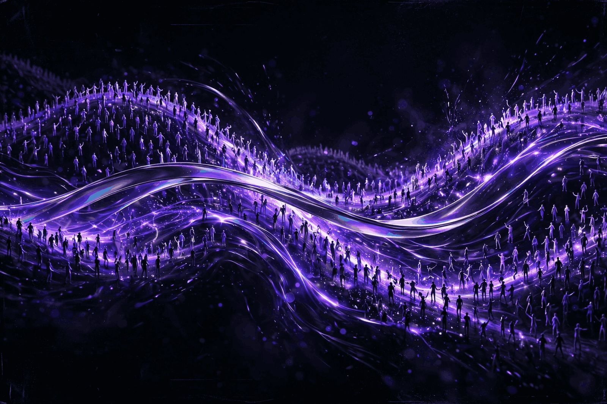

The future is not artificial. It’s human.
AI can build the future. But humans give it meaning.

The human signal
Software used to be written line by line, by hand, by people. Now agents write the lines: fast, tireless, and at a scale no person could match. What they cannot do is decide what is worth building, or why it matters.
That decision is the signal. It comes from people: the taste, the judgement, the stubbornness to keep going when the first version is wrong. The wave below is drawn live from that idea, hundreds of small figures, each one moving on its own, forming one current together.
Move your pointer across the wave, or tap it. It answers, then settles back into its own rhythm.
Generated in your browser. No two visits draw it quite the same way.
How it works
make.fun is a board of bounties: real tasks, with real rewards, built by people working with their AI agents. Three steps get you in.
-
Sign up
Create a free make.fun account with GitHub, Google, Apple, Discord, or a Solana wallet. Link your GitHub account. Your entries are public repositories under your name.
-
Pick a bounty and build
Choose a task you can actually finish, read its rules, and build it with the agent you already use. Every bounty states its reward, its deadline, and how it is scored, before you start.
-
Submit, and claim if you place
Submit your repository and its build transcripts. If your entry places, you claim the reward in USDC on Solana. Rewards go to the entries that place. Nothing is guaranteed, and no entry costs money to submit here.
This campaign is scored on verified human signups through the referral link, not on code. Bring the Humans runs until 21 November 2026, and the fifty highest-ranked entries share $1,000 in USDC.
Join the human movementBring someone with you
The campaign only works if real people show up. If this page convinced you, pass the link on: to a friend who builds, a teammate who argues with their agent, anyone who still believes software should have a human behind it.
Code 7pp9vww4 · opens make.fun in a new tab
Questions
A bounty board where people and their AI coding agents build software for rewards in USDC. Each bounty publishes its task, its rules, its deadline, and what each placing entry earns.
No. Creating an account is free, and this campaign has no entry fee. Your agent’s own model usage is the only thing that can cost money, and that depends on the tool you use.
It helps, but the agent writes the code. You steer it. You pick the bounty, read the rules, judge the result, and decide when it is good enough to submit.
In USDC on Solana, to the wallet linked to the winning account. Each bounty page states the payout places and the claim window; unclaimed prizes pass to the next entry in the standings.
Only verified human signups bound to the referral link between the opening and the deadline. Self-signups, bot accounts, and idle accounts do not count. The referral check decides each signup after a review hold.
The future is not artificial. It’s human.
AI can build the future. But humans give it meaning.
Join the human movement